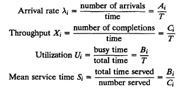
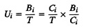
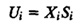
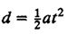
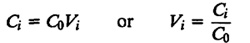
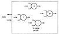
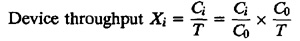

){kind=link}
){kind=link}

| Previous | Table of Contents | Next |
All professional men are handicapped by not being allowed to ignore things which are useless.
— Johann Wolfgang von Goethe
A large number of day-to-day problems in computer systems performance analysis can be solved by using some simple relationships that do not require any assumptions about the distribution of service times or interarrival times. Several such relationships called operational laws were identified originally by Buzen (1976) and later extended by Denning and Buzen (1978).
The word operational means directly measured. Thus, operationally testable assumptions are the assumptions that can be verified by measurements. For example, it is easy to verify whether the assumption of number of arrivals being equal to the number of completions holds for a particular system. Therefore, this assumption, commonly called the job flow balance assumption, is operationally testable. On the other hand, one can never establish through measurement that a set of observed service times is or is not a sequence of independent random variables. Thus, the assumption of independence, although commonly used in stochastic modeling of queues, is not operationally testable.
The operational quantities are the quantities that can be directly measured during a finite observation period. For example, consider the black-box view of a device i shown earlier in Figure 30.3. If we observe the device for a finite time T, we can measure the number of arrivals Ai, the number of completions Ci, and the busy time Bi during this period. All of these are operational quantities. From these we can further derive the following operational quantities:

Notice that these operational quantities are variables that can change from one observation period to the next, but there are certain relationships that hold in every observation period. Such relationships are called operational laws. Several such laws are presented later in this chapter.
Given the number of completions Ci and the busy time Bi of a device i during an observation period T, the following relationship holds among these variables:

or

This relationship is called the utilization law.
The utilization law, as well as other operational laws, is similar to the elementary laws of motion. For example, if a body starts at rest and accelerates at a constant acceleration a for an interval of time t, the distance traveled d is given by

Notice that distance d, acceleration a, and time t are operational quantities. There is no need to consider them as expected values of random variables or to assume a probability distribution for them.
Throughput Xi = exit rate = arrival rate = 125 pps
Service time Si = 0.002 second
Utilization Ui = XiSi = 125 × 0.002 = 0.25 = 25%
The forced flow law relates the system throughput to individual device throughputs. In an open model, the number of jobs leaving the system per unit time defines the system throughput. In a closed model, no job actually leaves the system. However, traversing the outside link (the link connecting "Out" to "In" in Figure 32.2) is equivalent to leaving the system and immediately reentering it, and the system throughput is defined as the number of jobs traversing this link per unit time.
If our observation period T is such that the number of job arrivals at each device is the same as the number of job completions, that is,
Ai = Ci
we can say that the device satisfies the assumption of job flow balance. If the observation period T is long, the difference Ai - Ci is usually small compared to Ci. It will be exact if the initial queue length at each device is the same as the final queue length.
Suppose each job makes Vi requests for the ith device in the system, as shown in Figure 33.1. If the job flow is balanced, the number of jobs C0 traversing the outside link and the number of jobs Ci, visiting the ith device are related by


FIGURE 33.1 Internal view of the system.
Thus, the variable Vi is the ratio of visits to the ith device and the outside link. It is therefore called the visit ratio. The system throughput during the observation period is
The throughput of the ith device and the system throughput are therefore related as follows:

In other words,
| Xi = XVi | (33.1) |
This is the forced flow law. It applies whenever the job flow balance assumption is true.
It is clear that if the job flow balance is not true, then either there are some jobs that arrived during the observation period but did not leave or there were some jobs already in the system at the beginning of the observation period. In either case, it is possible that these jobs have not yet made all Vi visits to the ith device and Ci ≠ C0Vi.
Combining the forced flow law and the utilization law, we get
or
| Ui = XDi | (33.2) |
Here Di = ViSi is the total service demand on the device for all visits of a job. Equation (33.2) states that the utilizations of various devices in the system are proportional to total demand Di per job on the device. Hence, the device with the highest Di has the highest utilization and is the bottleneck device. This result will be used later in Section 33.6.
| Previous | Table of Contents | Next |